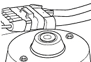
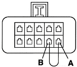

Read fault codes
1. Locate the diagnostic socket, fig 1 
Fig 1
2. Turn off the ignition
3. Connect pin A and B according to fig 2, below. 
Fig. 2
4. Turn on ignition
5. Watch the “check engine“ lamp and count/note the flashes. Every fault code is of two or tree flashes. A short paus between eatch flash and a long paus between eatch fault code.
6. Compare your note of fault codes with the fault code table
Erase fault codes:
1. Turn off ignition.
2. Disconnect the short cut between pin A and B
3. Disconnect the battery ground connection for 60 seconds. OBS!!! Radio and car watch can loose memory when battery is disconnected.